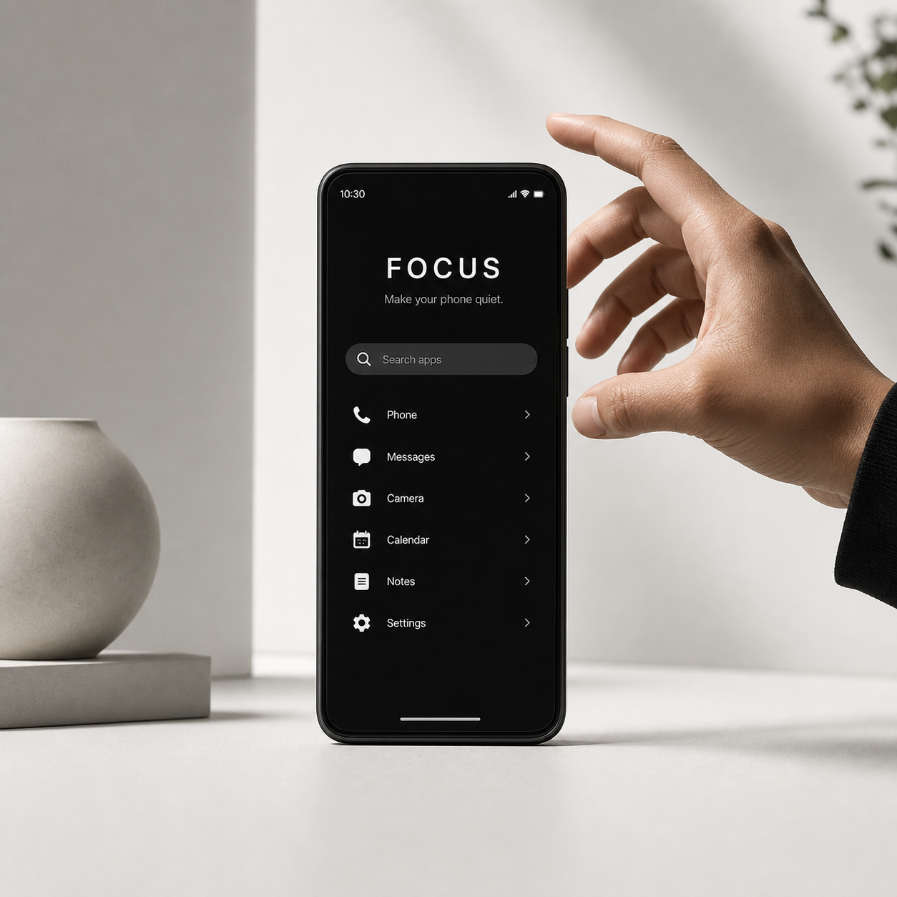

Minimal home
Keep only the apps that deserve immediate access, with a clean text-first surface.
Minimal Android launcher
A quieter home screen for people who want their phone to feel intentional again. Less noise, fewer visual triggers, and focus tools that stay on your device.
What it is
Focus replaces a noisy app grid with a restrained black-and-white launcher built around search, deliberate app opening, and simple focus boundaries.

What it does
Focus gives you enough structure to slow down automatic app opening without turning your phone into another system to manage.
Keep only the apps that deserve immediate access, with a clean text-first surface.
Find apps when you need them instead of scanning a wall of icons by habit.
Add intent prompts, app quotas, hidden apps, and dull labels for attention traps.
Use different app lists for work, home, weekends, or other modes of your day.
Why it exists
Focus is built from the belief that a launcher should help you decide, not persuade you to keep opening things.
Monochrome visuals and low-noise screens reduce the number of things asking for attention.
Search, workspaces, and optional prompts make app opening feel like a choice.
Settings and focus activity are stored on the device. No ads, analytics, cloud sync, or tracking SDKs.


Who it is for
Use Focus if your home screen has become a reflex machine. It is made for people who still need their phone, but want fewer shortcuts into distraction.
Privacy
Focus does not request internet access and does not include ads, analytics, cloud sync, or third-party tracking SDKs. Optional permissions are used only for the focus features you enable.